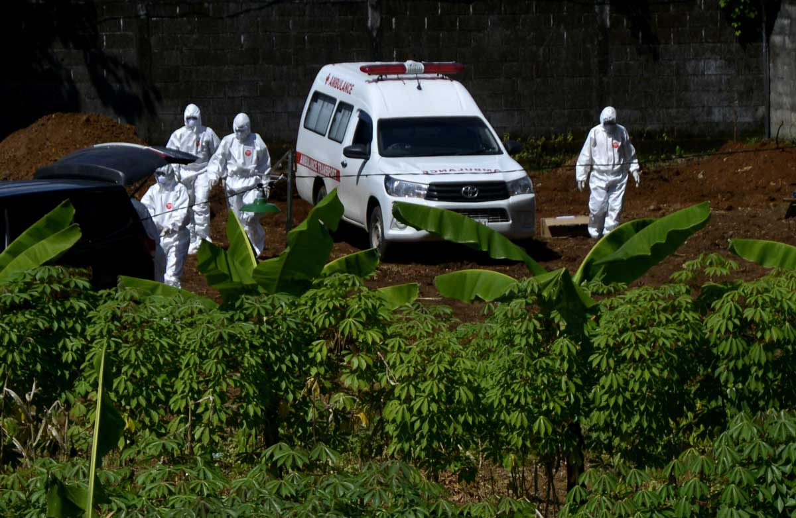
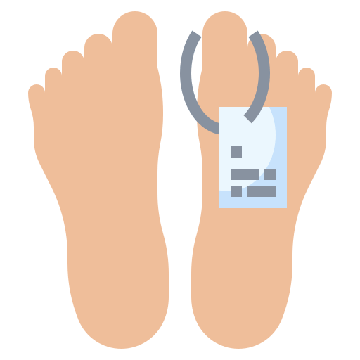
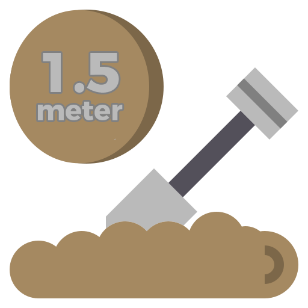
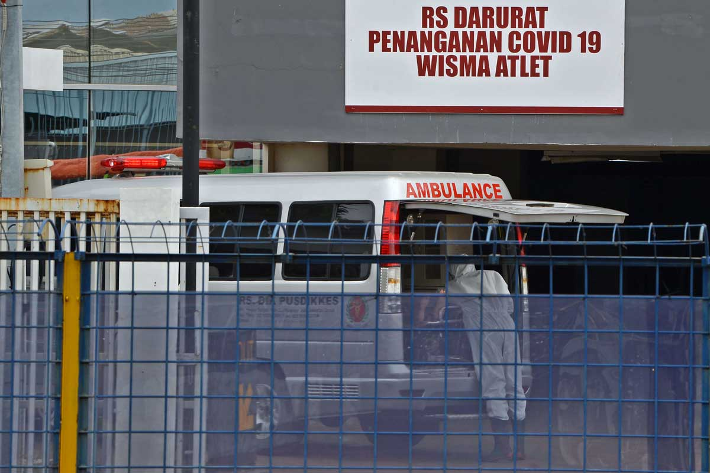
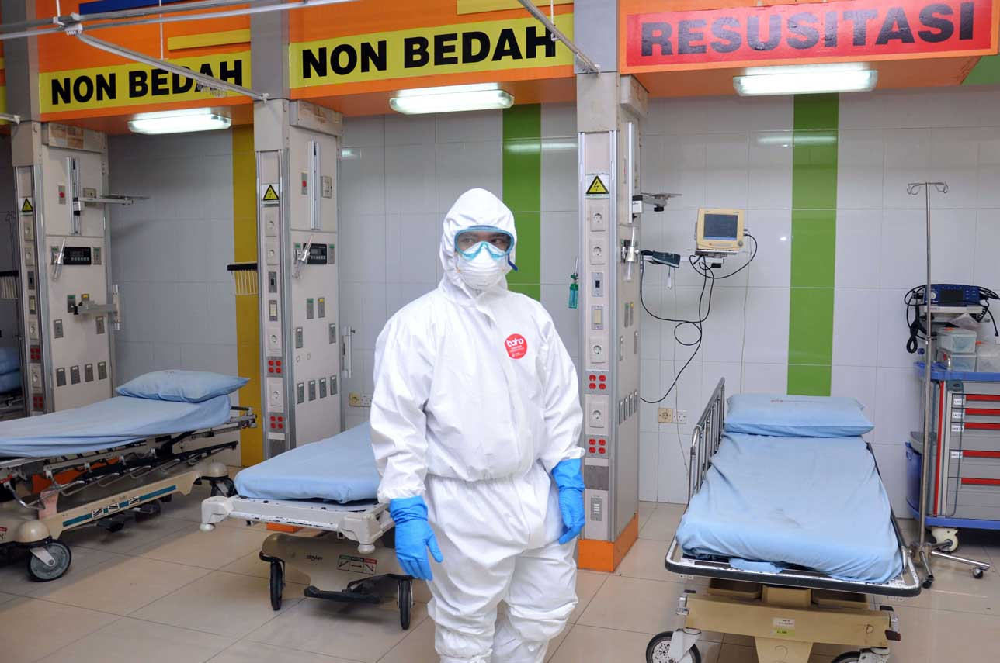
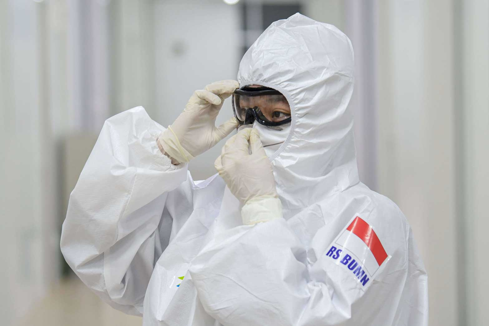
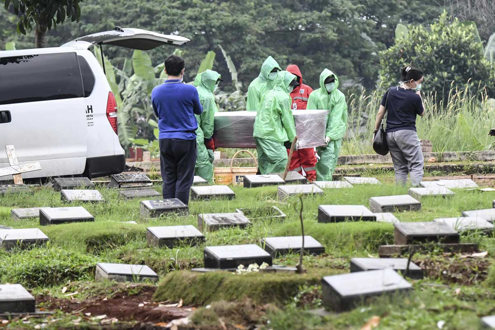

Yang Terampas dan Yang Putus
Dua puluh dokter meninggal di tengah pandemi Corona dan ratusan tenaga medis terpapar Covid-19. Ada yang terjangkit saat merawat pasien positif. Banyak tenaga medis tak dibekali alat pelindung diri yang memadai.
Dokter Ratih Purwarini masih sempat bertukar kabar dengan Siti Hajar Rahmawati, sejawatnya di Akara Perempuan, organisasi yang mengadvokasi perempuan korban kekerasan, pada Senin, 23 Maret 2020.
Selain bertanya kabar, Direktur Rumah Sakit Duta Indah, Jakarta Utara itu bermain tebak-tebakan dengan Rahmawati. “Keesokan harinya, saya mendapat kabar dia dibawa ke Rumah Sakit Eka Hospital,” kata Rahma menceritakan ulang kejadian itu pada Selasa, 7 April 2020.
Sepekan kemudian Rahma menerima kabar Ratih meninggal sebagai Pasien Dalam Pengawasan (PDP) Covid-19 pada Selasa, 31 Maret 2020.
Rahma mengenal Ratih pada 2018 pada sebuah acara diskusi. Ratih lantas mengajak Rahma bergabung dengan Akara Perempuan. Organisasi ini menerima pengaduan dan memberikan pendampingan kepada perempuan-perempuan yang menjadi korban kekerasan.
Sebelum mendirikan Akara, Ratih aktif di Komisi Nasional Antikekerasan terhadap Perempuan pada 2014-2017. Selama periode tersebut ia menjadi relawan unit pengaduan rujukan (UPR) Komnas Perempuan. Menurut Rahma, kasus-kasus yang didampingi Akara berasal dari aduan yang masuk ke Komnas.

Pemakaman jenazah COVID-19 di Sulawesi Selatan. [ANTARA FOTO/Abriawan Abhe].
Nina Widyawati, ibunda Ratih, mengatakan sang anak sempat menyebut ada koleganya yang sakit. Sempat dikira Covid-19, Ratih sedikit lega karena rekannya itu ternyata tifus. Namun dua hari berikutnya pada Kamis, 19 Maret, Ratih sudah tak masuk kantor lantaran tidak enak badan.
Selasa, 24 Maret, Nina menuturkan Ratih bercerita sedang menjalani pemeriksaan laboratorium di sebuah rumah sakit swasta di BSD, Tangerang Selatan. Seusai diperiksa, ibu dua anak itu menolak arahan rumah sakit untuk isolasi mandiri di rumah. "Dia bilang, 'Aku enggak mau pulang, banyak yang meninggal itu yang disuruh isolasi mandiri, begitu parah cari rumah sakit enggak dapat'," kata Nina berkisah.
Ratih pun dirawat di rumah sakit itu. Hari Kamis, ia menjalani pemeriksaan uap seperti yang dilakukan pada penderita asma. Dua hari berikutnya, Sabtu, 28 Maret, tiba-tiba rumah sakit menyatakan kondisi Ratih kritis. Rumah sakit juga angkat tangan lantaran tak punya ventilator.
Ratih sempat akan dibawa ke Rumah Sakit Umum Daerah Duren Sawit, Jakarta Timur. Namun karena penuh, dia kemudian dipindahkan ke Rumah Sakit Pelni, Petamburan, Jakarta Pusat, atas bantuan seorang kenalan Nina. Ratih dibawa sudah dalam kondisi kritis.
Berdasarkan data per Selasa, 7 April 2020, Ratih merupakan satu dari dua puluh dokter di bawah Ikatan Dokter Indonesia (IDI) yang meninggal di tengah pandemi Corona. Secara keseluruhan ada 26 dokter yang meninggal saat wabah ini, enam lainnya anggota Ikatan Dokter Gigi Indonesia.
Segalanya tentang
covid-19
Dirjen Bimas Islam Kementerian Agama Republik Indonesia menerbitkan edaran tentang pengurusan jenazah COVID-19. Berikut adalah tiap langkah dari protokol yang dilakukan oleh pemerintah untuk korban meninggal virus corona.
Mulai
1. pengurusan
Selanjutnya
Pengurusan jenazah pasien COVID-19 dilakukan oleh petugas kesehatan rumah sakit yang dilengkapi oleh Alat Pelindung Diri (APD).
Selanjutnya

Jenazah ditutup dengan kain kafan/bahan dari plastik yang tidak dapat tembus air untuk melindungi petugas dari cairan tubuh yang keluar. Jenazah juga dapat ditutup dengan bahan kayu atau bahan lain yang tidak mudah tercemar.
Selanjutnya
Jenazah yang sudah dibungkus tidak boleh dibuka lagi, kecuali untuk kepentingan serius seperti autopsi - ini pun hanya dapat dilakukan oleh petugas.
Selanjutnya
Jenazah harus dikubur maksimal 4 jam setelah jenazah dibungkus oleh petugas.
Selanjutnya
2. sholat jenazah (jika perlu)
Selanjutnya

Pelaksanaan shalat jenazah dilakukan di rumah sakit rujukan.
Selanjutnya
Shalat jenazah bisa juga dilakukan di masjid JIKA masjid tersebut sudah melalui proses sanitasi secara menyeluruh dan juga melakukan desinfeksi setelah shalat jenazah.
Selanjutnya
Shalat jenazah harus dilakukan dengan mempertimbangkan waktu empat jam setelah jenazah dibungkus.
Selanjutnya
Shalat jenazah bisa dilakukan oleh satu orang jika diperlukan.
Selanjutnya
3. penguburan
Selanjutnya
Jenazah harus dikuburkan di lokasi yang setidaknya 50 meter dari sumber air tanah yang digunakan sebagai air minum, dan berjarak setidaknya 500 meter dari pemukiman terdekat.
Selanjutnya

Jenazah harus dikuburkan pada kedalaman 1,5 meter dan dikuburkan dengan tanah setinggi 1 meter.
Selanjutnya
Pihak keluarga jenazah hanya bisa turun di penguburan jika semua prosedur jenazah dilakukan dengan baik.
Kembali
Duka juga menyelimuti keluarga Djoko Djudojoko, dokter bedah di Rumah Sakit BMC Mayapada, Bogor, Jawa Barat.
Djoko tertular virus corona dari pasien yang ia tangani di RS BMC Mayapada. Merasakan sesak dan demam, pensiunan dokter militer ini dirawat di rumah sakit tempatnya bertugas mulai Rabu, 18 Maret. Dipindahkan ke Rumah Sakit Pusat Angkatan Darat Gatot Subroto pada Sabtu, 21 Maret, dokter sepuh ini meninggal di hari yang sama.
Adik ipar Djoko, Pandu Riono bercerita, pensiunan dokter tentara itu tak perhitungan. “Kalau ada pasien bedah yang tidak punya uang, tidak bisa membayar saat itu, ya sudah dia tidak masalah,” ujar pakar epidemiologi Universitas Indonesia ini.
Wakil Ketua Umum Pengurus Besar IDI Adib Khumaidi mengatakan, IDI tengah menelusuri penyebab kematian para dokter. Secara umum, kata dia, ada beberapa faktor penyebab tertularnya para dokter tersebut. Di antaranya, mereka pernah berkontak dengan pasien Covid-19, usia, riwayat perjalanan ke negara terpapar, dan minimnya alat pelindung diri (APD).
Adib mengatakan penularan banyak terjadi di area seperti klinik, Unit Gawat Darurat (UGD), dan rumah sakit atau tempat praktik swasta. Menurut dia, tenaga medis di tempat-tempat itu selama ini kekurangan APD. “Kalau ruang isolasi, dokter paru, penyakit dalam, dia sudah dilengkapi dengan APD yang standar,” kata Adib kepada Tempo, Selasa, 7 April 2020.

Penanganan COVID-19 di RS Darurat [ANTARA FOTO/Aditya Pradana Putra.
Salah satu dokter yang meninggal karena terpapar pasien Corona di tempat praktik adalah Bambang Sutrisna. Sang anak Leonita Triwachyuni bercerita, ayahnya berpraktik di klinik mandiri yang terletak di kawasan Jakarta Barat.
Pada 12 Maret, Leonita mengatakan sang ayah menerima panggilan dari seorang pasien. Bambang memang hanya praktik jika sudah ada janji terlebih dulu. Leonita sudah meminta ayahnya membatalkan janji pemeriksaan, tapi Bambang bersikeras.
“Papah orangnya enggak bisa dilarang untuk bekerja, dia enggak bisa diam saja di rumah,” kata anak bungsu dari 3 bersaudara itu. Alhasil, Bambang dan istrinya pun berangkat ke klinik menemui pasien dengan gejala batuk dan sesak tersebut. Leonita mengatakan, ibunya sering menemani sang ayah praktik.
Klinik mandiri tidak mendapat bantuan alat pelindung diri. Karena itu menurut Leonita, ayah-ibunya hanya mengenakan masker medis yang mereka beli seharga Rp 500 ribu per boks.
Dengan pelindung seadanya Bambang berhadapan dengan pasien yang kemudian membuka maskernya di dalam bilik pemeriksaan. Pasien itu bahkan sempat batuk-batuk saat diperiksa. Lima hari kemudian, Bambang jatuh sakit.
Leonita mengatakan ayahnya jarang mengeluh. Tapi kali ini, demam dan batuk yang ia rasakan membuatnya mengeluh sakit. 5 hari kemudian, ia dilarikan ke Rumah Sakit Persahabatan, Jakarta Timur. Dari hasil tes swab, Bambang dinyatakan positif tertular Covid-19. Ia meninggal pada hari yang sama. Belakangan baru ketahuan orang yang ditolong Bambang adalah pasien dalam pengawasan (PDP) Covid-19 yang memaksa pulang dari rumah sakit di Bintaro.
Sang istri pun dinyatakan positif Covid-19. Namun ia tak mengalami gejala sakit dan melakukan isolasi mandiri di rumahnya.

Kesiapan penanganan COVID-19 di Sumatera Utara. [ANTARA FOTO/Septiana Perdana]
Bambang dimakamkan di Pondok Rangon. Pemerintah Provinsi DKI Jakarta khusus menyediakan lokasi pemakaman itu untuk korban Covid-19. Tak ada ucapan ataupun upacara perpisahan.
Penguburan Guru Besar Fakultas Kesehatan Masyarakat Universitas Indonesia itu hanya dihadiri petugas yang pemakaman dengan pakaian hazmat lengkap. “Kami nggak punya pilihan harus dimakamkan di mana. Padahal Papah sudah membeli tanah untuk pemakaman di San Diego Hills,” kata Leonita.
Ketua Dewan Penasihat Majelis Kehormatan Etik Kedokteran (MKEK) IDI, Prijo Sidipratomo, mengatakan para sejawatnya yang meninggal mayoritas dokter spesialis, guru besar, atau dokter birokrat—seperti kepala rumah sakit dan kepala dinas—yang usianya di atas 50 tahun.
Ia melihat salah satu faktor yang menyebabkan banyak tenaga medis tertular virus Corona, sampai ada yang meninggal, adalah minimnya APD. “Kalau kondisi kekurangan APD masih terus-terusan terjadi maka Indonesia diprediksi bisa kehilangan banyak dokter pakar, spesialis, guru besar, atau birokrat,” kata dia.
Ia menuturkan dokter gigi dan spesialis telinga hidung dan tenggorok (THT) menjadi dua kelompok yang rentan tertular. Ada enam dokter gigi dan tiga dokter spesialis THT yang meninggal di tengah wabah Corona.

Kesiapan Rumah Sakit Pertamina Jaya rawat pasien COVID-19 [ANTARA FOTO/M. Risyal Hidayat]
Prijo mengatakan dua spesialis tersebut biasanya hanya mengenakan APD level 1 yakni masker bedah. Sedangkan dokter spesialis paru-paru, penyakit dalam, mikrobiologi, dan patologi klinis relatif lebih aman karena telah dilengkapi dengan APD level 3, yaitu masker N95, goggle, faceshield, dan hazmat.
Penggunaan APD di rumah sakit pun diutamakan bagi dokter yang langsung merawat pasien Covid-19. Prijo bercerita, hal itu juga terjadi di sebuah rumah sakit swasta berstandar JCI tempatnya bertugas. Dokter radiologi ini sempat memeriksa pasien yang mengeluh sakit perut, tetapi ternyata menderita pneumonia, belakangan menjadi PDP. Ketika itu, Prijo juga tak memakai APD memadai. Ia kini mengisolasi diri dan berstatus orang dalam pemantauan (ODP).
Pengalaman serupa dirasakan Leonita. Ia mengatakan sempat menangani pasien PDP Corona pada pertengahan Maret 2020 lalu, di Rumah Sakit Cipto Mangunkusumo, Jakarta Pusat. Pasien dengan status yang sama, memang terbilang cukup sering keluar masuk instalasi gawat darurat (IGD), tempat Leonita bertugas sehari-hari sebagai dokter umum.
Lantaran alat pelindung diri yang ada di tempatnya bekerja terbatas, perempuan 29 tahun itu akhirnya merawat pasiennya dengan hanya bermodalkan masker. Ia mengatakan APD yang mereka miliki saat ini kebanyakan sumbangan dari masyarakat.
Leonita mengatakan mereka dijanjikan akan mendapat bagian dari APD yang disediakan pemerintah, namun janji tersebut belum dipenuhi. “Kami harus menunggu sumbangan orang. Untungnya lumayan banyak yang menyumbang masker medis dan N95. Tapi kami gak tahu sampai kapan sumbangan ini ada,” kata Leonita saat dihubungi Tempo, Selasa, 7 April 2020.
Keputusan Leonita merawat pasien harus dia bayar mahal. Tak lama setelahnya, ia mengalami gejala demam disertai batuk. Belakangan, ia dinyatakan positif tertular Covid-19. Hal ini membuatnya memutuskan tak pulang ke rumah orang tuanya di daerah Jakarta Timur.
Pemerintah pusat mengakui hingga Mei 2020 saja, rumah sakit di seluruh negeri membutuhkan setidaknya 3 juta APD. Situasi bertambah buruk saat ini karena stok APD menipis dan pemerintah kesulitan mendapatkannya dari luar negeri.

Korban meninggal karena COVID-19 terus bertambah. [ANTARA FOTO]
Ketua Gugus Tugas Percepatan Penanggulangan Covid-19, Doni Monardo, mengatakan semua negara mengalami kekurangan APD. “Baru-baru ini, bahkan ada negara yang mengambil alih proses pemberangkatan APD dari satu tempat ke tempat lain,” kata Doni, 6 April 2020.
Presiden Joko Widodo akhirnya meminta industri dalam negeri untuk memproduksi APD bagi tenaga kesehatan. Ia meyakini perusahaan lokal dapat memenuhi kebutuhan dalam negeri saat ini. “Ada 28 perusahan APD dan Gown, 5 perusahaan sudah memproduksi dari awal,” kata Jokowi.
Adib Khumaidi mengatakan, merespons banyak dokter yang menjadi korban Covid-19, IDI kini tengah menyusun standarisasi penanganan pasien. Ada tiga hal yang tertuang dalam usulan itu, yakni standarisasi usia, APD, dan fasilitas kesehatan. Dalam poin umur, IDI menganjurkan agar hanya dokter berusia muda, sehat, dan tak memiliki penyakit penyerta yang bertugas di ruang perawatan pasien Covid-19.
Kedua standarisasi APD. Menurut Adib, semua petugas medis harus menggunakan APD, baik yang bertugas di unit rawat jalan, IGD, hingga klinik. APD yang digunakan pun harus level 2, mencakup goggle, faceshield, dan masker N95.
Usulan ketiga adalah standarisasi fasilitas kesehatan. Menurut Adib, rumah sakit harus tegas melakukan penapisan (screening) pasien-pasien yang datang. IDI juga menganjurkan agar ada pembatasan frekuensi pelayanan, praktik, dan tindakan medis yang tidak bersifat mendesak (emergency).
Dokter spesialis bedah ortopedi itu juga mewanti-wanti masyarakat agar disiplin melakukan pembatasan interaksi fisik (physical distanding). Dengan jumlah kasus yang terus bertambah, Adib mengatakan masyarakatlah yang seharusnya menjadi garda depan memutus mata rantai penyebaran virus.
“Kami (dokter) itu benteng terakhir, bukan garda terdepan. Kalau ingin mengurangi peta penyebaran, maka garda terdepan adalah masyarakat.”